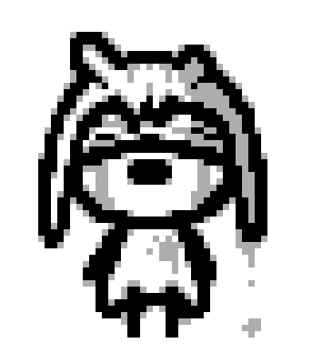

Personal Interests
I enjoy creative writing a lot, with the theme I gravitate towards the most being people finding themselves in unfamiliar places, amongst unfamiliar beings, and having to adapt, most often by realizing that not everyone is out to get them, and that they can finally lower their guard.
My main writing projects are:
- Another Way (ongoing) - Pokémon fanfiction | Sue, a lowly comp-sci student with no knowledge of Pokémon, must persevere within their world after waking up as a Gardevoir. With the locals and their language alien to her, even the refuge she receives feels uncertain. As she pushes on, her god-mending task becomes clear, as does its difficulty. Despite that, her goal remains the same- to survive and make it home, no matter what.
- From the Vast (ongoing) - Pokémon fanfiction | In a remote corner of Unova, a Pokémon village hides from the omnipresent, barbarous humanity. Through cooperation, they flourish despite their small size, rising above the uncaring brutality of the natural order. Which works remarkably well... until a half dead girl shows up on their doorstep. Will this hidden village remain a secret once humans come looking?
- Welcome Home (finished) - Original Story | Riley, a human orphan with a rough background, is adopted by the Ashers, a family of skunk anthros, all of them learning a lesson on what it truly means to be a family and to overcome differences.
Over the years, I've put together a couple neat utilities for videogames I play, as well as a couple mods, with almost all art assets being made by myself.
- HATE - The original asset scrambling program for Undertale.
- Undefined 3.0 - An asset scrambling program for The Binding of Isaac: Rebirth, featured on Vinesauce.
- xxhash_cpp - C++ port of the xxhash hashing library.
- Grumpig - Tool for applying patches to the gamemaster file used by pvpoke.com.
- Astra Mod - Mod for The Binding of Isaac: Rebirth, featuring art assets made by yours truly, written in IsaacScript.

I'm a big fan of the Pokémon franchise and especially setting, though mostly because of what it could be rather than what it currently is.
I play Pokémon GO at a semicompetitive level (yes, it has a competitive scene!), reached Legend thrice,
ended Silph Season 4 at global rank #109, and I'm a big fan of limited formats.
I'm also a contributing writer and meta analyst for
GOStadium.